|
Modula2 CP/M80 |
コンパイラとリンカで構成されています。
アセンブラはついていませんがマイクロソフト社のアセンブラの
M80
の出力する
REL
ファイルを本コンパイラの形式に変換するプログラムが付いており
それで変換したものがリンクできます。
リンカは組み込み用途にも使える機能を備えています。
8ビットのコンパイラでは珍しくメモリやIOを直接操作する手続きなどが追加されていませんが
マニュアルで
M80
のアセンブリ言語で手続きにする方法が詳説されているので標準の手続きにない機能が必要な人は
M80
を使って追加してくれと言うことでしょう。
このツールの入手は http://www.cpm.z80.de/ の下の所からできます。
|
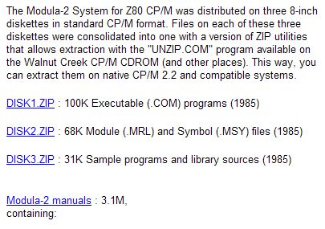 |
|
使い方 |
|
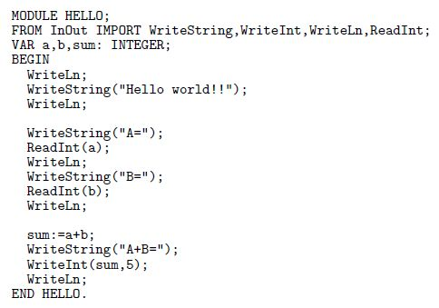 |
|
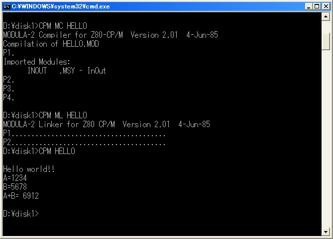 |
|
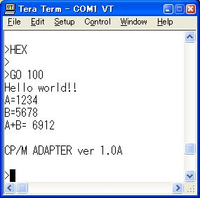 |
|
アセンブラ手続きの書き方 |
5種類の手続きをアセンブリ言語で書きます下がModula2言語で書いた定義モジュールです。
すべてバイト操作のプログラムなのですが8ビットの型の変数がないので16ビットの
INTEGER
型の変数で下位の8ビットだけを使っています。
|
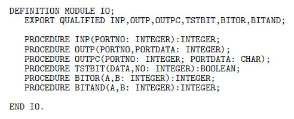 |
下がアセンブリ言語で書いたプログラムの本体です。
|
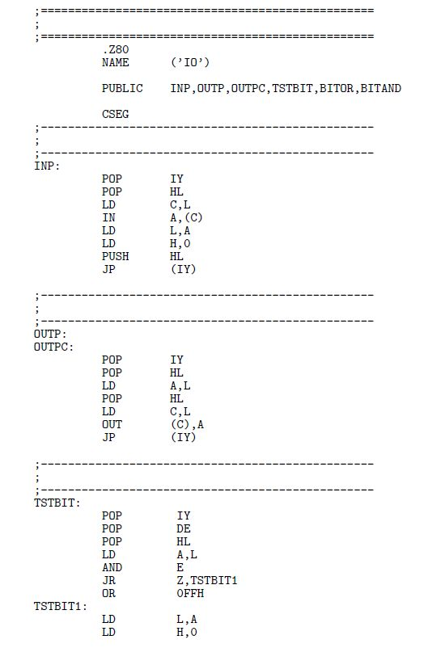 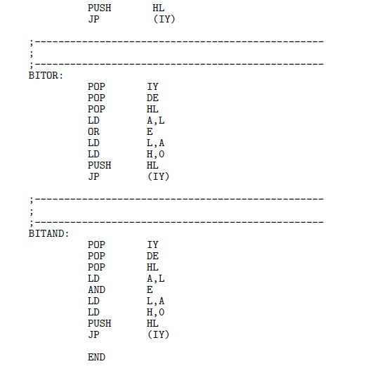 |
下のコマンド操作で IO .REL から IO .MRL が得られて 本コンパイラのリンカの ML .COM でリンクできるファイルが出来上がります。
|
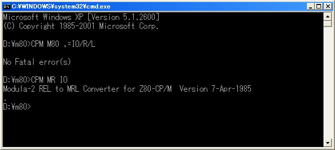 |
定義モジュールを1回だけコンパイルしておけばいつでも手続きを使用できます。
|
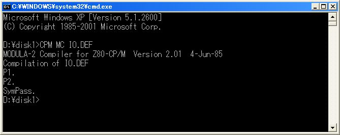 |
|
IO直接操作 |
|
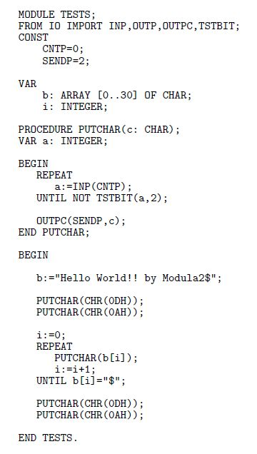 |
上で作った手続きを使用して
Hello World!! by Modula2
を表示するプログラムを書いてみました。
Modula2はC言語などと比較して手続きの定義や使用の方法が厳密なのでアセンブラ言語で
どんどん手続きを増やしても自然と整理整頓されるので混乱しないと思います。
アセンブリ言語で部品を書いてModula2言語で統括して使うと言うのもすっきりとしていて
本コンパイラが独自の拡張をしていないのもかえって好感が持てます。
|
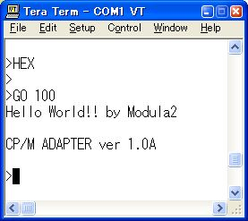 |